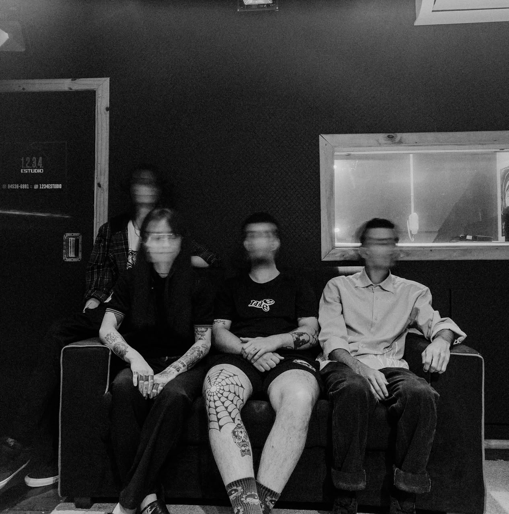

NULL é uma banda de nugaze/shoegaze de São Paulo, capital. Entre paredes de guitarras densas, distorções e atmosferas ruidosas, a banda constrói um som pesado que contrasta com a vulnerabilidade de suas letras.
Nascida de um dado nulo, um erro de sintaxe e fragmentos de informação corrompida, Null encontra na falha sua própria linguagem. Pairando entre bugs, glitches e ruídos, a banda busca fazer seu barulho atravessar todo e qualquer arquivo corrompido, dentro ou fora de um dispositivo.
Com influências que vão de Nothing, Narrow Head, Trauma Ray, Fleshwater a Softcult, do slowcore ao antipop, a Null traduz dias estáticos e memórias corrompidas em paredes de som. Depois de levar o projeto pela primeira vez aos palcos no fim de 2026 (FFFRONT e Hocus Pocus), a banda segue expandindo seu ruído ao vivo e trabalhando em seu material de estreia.
Null é: Gabriel Lossena (Bateria), João Matos (Guitarra), Maynara Lino (Voz e Guitarra) e Vi Brunini (Baixo).
Booking: null.nulo.null@gmail.com